mutual / scene_0050 / A
정리 대상2개 · ACC 80%→80% (+0%p) · F1 0.875
120.2초 / VLM 0회 / 1110스텝 · 새로 정리: 없음

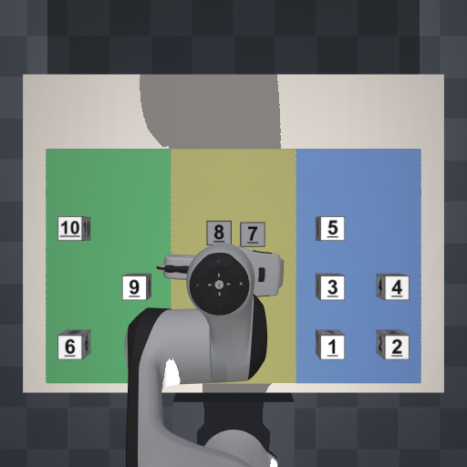
2026-11-06 · 고정 모델 R5 + motion7k · 로컬 RTX3090Ti
oneway·mutual 각5씬으로 수행한 로컬120초 예비 실험의 수치·전후 그림·실행 영상을 모았습니다.
시작 ACC 평균은40%였습니다. 최종42%는 새로42%를 정리했다는 뜻이 아니라 시작점보다2%p 증가한 값입니다. 학생 Colab300초 결과와 별도 표로 보고하세요.
인쇄용PDF · Markdown 보고서 · 요약CSV · 30회CSV · 전체 영상30개
두 계열(oneway·mutual)에서 미리 고정한 씬을5개씩 골랐다. 각 계열은 정리가 필요한 큐브가2·4·6·8·10개인 씬을 하나씩 포함하며, 전체 큐브 수는 항상10개다. 같은 씬·시드42에 A·B·C1을 적용해30회를 평가했다. GPU는 로컬 RTX3090Ti, 시간 제한은120초, 운반 단위는240스텝, 관측 간격은60스텝, 최대 VLM 호출은12회다. VLM R5와 부분 작업 VLA motion7k를 고정하고 세 조건 모두 같은 VLA를 썼다. A는 전체 과제 지시를 받으며 VLM을 호출하지 않는다. B는 VLM 초기 계획1회를 실행하고, C1은 학생의 실패 의심 전략에 따라 재계획한다.
| 조건 | 동작 |
|---|---|
| A | 전체 과제 지시 → VLA / VLM0회 |
| B | 초기 VLM 계획1회 → VLA |
| C1 | B와 같은 첫 계획 → 실패 의심 시 재계획 |
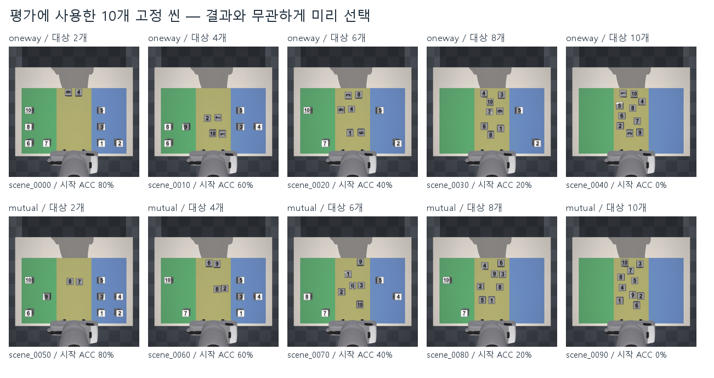
| 계열 | 조건 | 시작 ACC | 최종 ACC | 증가 | macro F1 | 씬 완료 | 평균 과제 시간 | VLM 호출 |
|---|---|---|---|---|---|---|---|---|
| oneway | A | 40% | 40% | +0%p | 0.499 | 0/5 | 120.1초 | 0.0회 |
| oneway | B | 40% | 42% | +2%p | 0.533 | 0/5 | 104.4초 | 1.0회 |
| oneway | C1 | 40% | 42% | +2%p | 0.524 | 0/5 | 120.1초 | 2.8회 |
| mutual | A | 40% | 40% | +0%p | 0.492 | 0/5 | 120.1초 | 0.0회 |
| mutual | B | 40% | 42% | +2%p | 0.526 | 0/5 | 102.3초 | 1.0회 |
| mutual | C1 | 40% | 42% | +2%p | 0.506 | 0/5 | 120.0초 | 2.4회 |
각 씬 점수의 산술평균입니다. macro F1은 두 목표 구역의 F1 평균입니다. 시간은 추론·제어를 포함하고 모델 로딩·영상 저장은 제외합니다. 계획 소진으로 일찍 끝난 미완료 실행도 포함하므로 성공까지의 시간과 다릅니다.
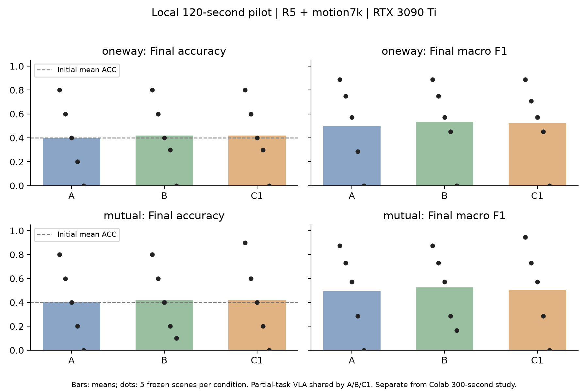
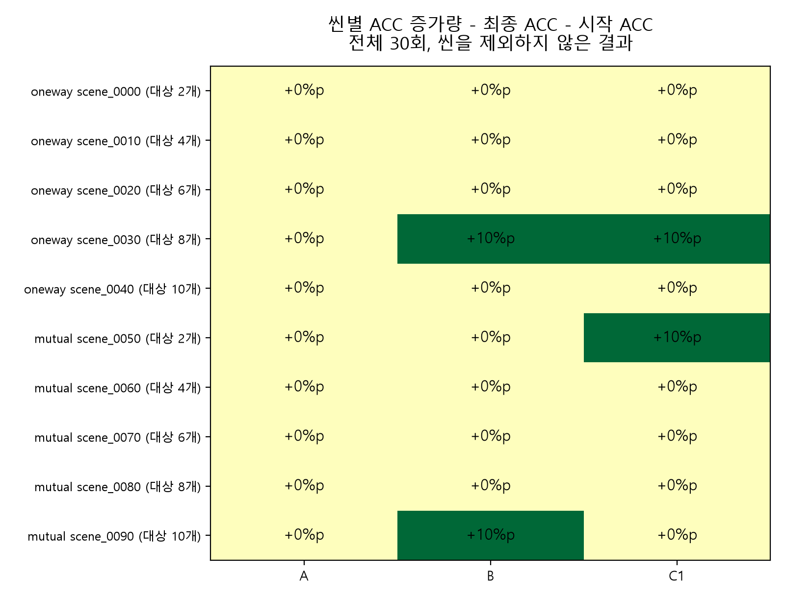
30회 모두 코드 오류 없이 종료했지만 전체 씬 정리 완료는 모든 계열·조건에서0/5회였다. 시작 ACC 평균40%에 대해 A는40%, B·C1은42%였으므로 증가량은 각각0·2·2%p다. 이번 예비 실험에서 C1의 추가 ACC 이득은 관찰되지 않았고 평균 macro F1도 B보다 낮았다. C1은 B보다 VLM을 더 자주 호출했고 평균 과제 시간도 약15.7초(oneway),17.7초(mutual) 길었다. 이는 이번 모델·씬·예산에서의 관찰이며 피드백 루프가 일반적으로 무의미하다는 증거는 아니다.
아래 사례는 네 결과 패턴을 설명하려고 선정했습니다. 통계는 사례만이 아니라 전체30회로 계산했습니다. 개선된 사례와 반대·미개선 사례를 함께 보세요.
원본 process.mp4는 시뮬레이션 시간 기준이며 VLM 추론 대기를 그대로 재생하지 않는다. 영상 자막의 wall은 실제 과제 시간이다. 별도 A/B/C1 비교 영상은 trace.wall로0~120초를 맞춰 VLM 대기 중에는 직전 기록 프레임, 종료 뒤에는 최종 프레임을 유지한다. 실제로 없던 동작을 보간하지 않았다. 끝점까지 포함해 비교 영상 길이는 약120.2초다. 점수는 원본 실험의120초 제한 결과를 그대로 쓴다.
oneway / scene_0030
시작 ACC는20%였다. A는20%를 유지했고, B와 C1은8번 큐브를 새로 정리해30%가 됐다. C1은 VLM을2회 호출했지만 B(1회)보다 최종 ACC가 높지는 않았다. 세 조건 모두 전체 정리는 완료하지 못했다.
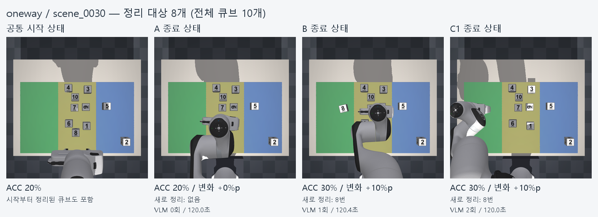
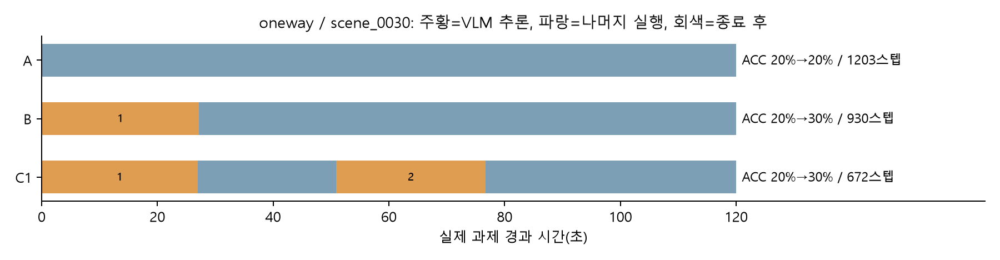
동기화 비교 영상 파일 · 세 조건의 공통 시계0~120초, 대기·종료 구간은 프레임 유지
mutual / scene_0050
시작 ACC는80%였다. A와 B는80%를 유지했고 C1은8번 큐브를 새로 정리해90%가 됐다. 이 씬에서 C1이 B보다 나았다는 관찰은 맞지만, 이를 전체 전략의 우수성으로 확대하지 않는다.
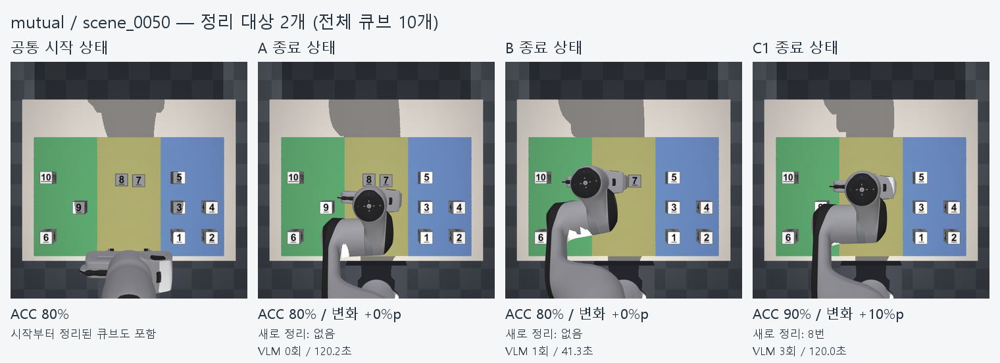
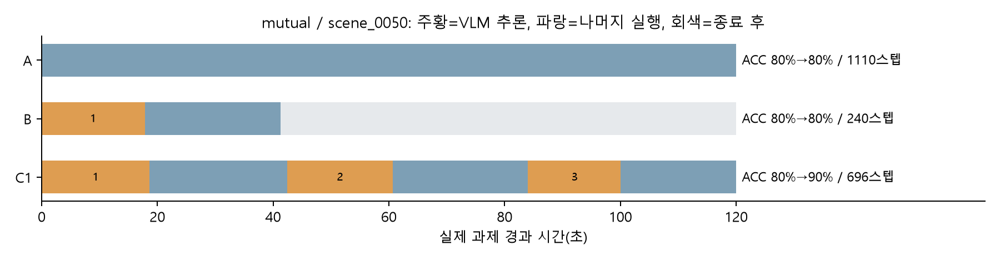
동기화 비교 영상 파일 · 세 조건의 공통 시계0~120초, 대기·종료 구간은 프레임 유지
mutual / scene_0090
처음에는10개 모두 정리가 필요했다. B는4번 큐브를 새로 정리해10%가 됐지만 A와 C1은0%였다. C1만 개선된 앞 사례와 반대되는 결과로, 평균이 같아도 개선된 씬은 다를 수 있음을 보여 준다. 추가 추론 시간과 계획 내용이 함께 달라 원인을 하나로 단정할 수 없다.
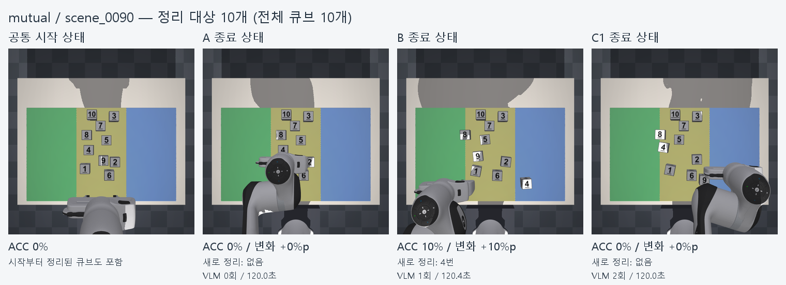
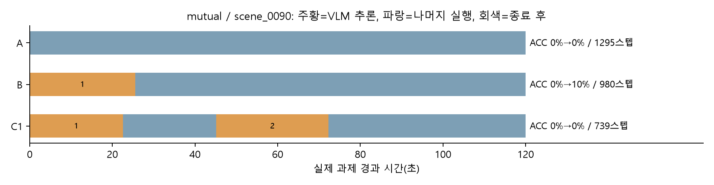
동기화 비교 영상 파일 · 세 조건의 공통 시계0~120초, 대기·종료 구간은 프레임 유지
oneway / scene_0040
처음에는10개 모두 정리가 필요했고 A·B·C1 모두 최종 ACC0%였다. 코드 오류가 아니라 제한 시간 안에 정확도를 높이지 못한 결과다. 본문에 개선 사례만 남기지 않기 위해 이 실패 사례를 함께 제시한다.
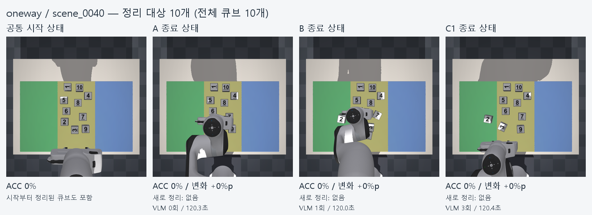
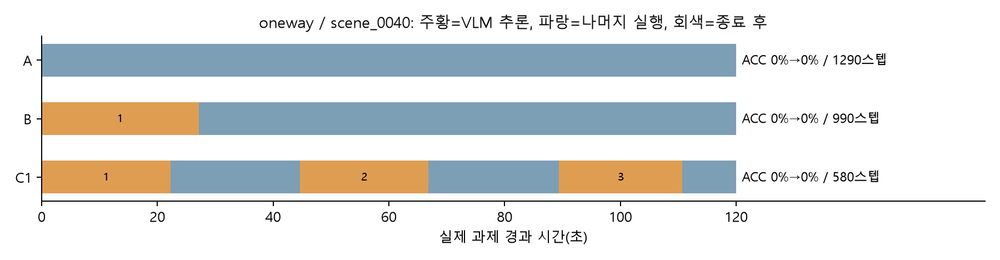
동기화 비교 영상 파일 · 세 조건의 공통 시계0~120초, 대기·종료 구간은 프레임 유지
본 예비 실험에서는 두 계열 모두 B와 C1의 최종 ACC 평균이42%로 같았으며 시작 ACC40%에서 각각2%p 증가했다. C1은 일부 씬에서 B보다 높은 ACC를 보였지만 반대 사례도 존재했고, 전체 평균 ACC의 추가 개선은 관찰되지 않았다. 추가 VLM 호출 비용과 하위 행동 모델의 제한을 고려해, 소규모 결과만으로 피드백 루프의 일반적인 효과를 단정하지 않았다.
원본 실행 기반 커밋 dbc6c693d14b · 원본 채점·그림·영상 및 SHA256은 함께 제공한 data/와 trials/에 보존했습니다.
| 계열 | 씬 | 조건 | 시작→종료ACC | 증가 | F1 | 과제시간 | VLM호출 | 새로 정리 |
|---|---|---|---|---|---|---|---|---|
| mutual | scene_0050 | A | 80%→80% | +0%p | 0.875 | 120.2초 | 0 | 없음 |
| mutual | scene_0050 | B | 80%→80% | +0%p | 0.875 | 41.3초 | 1 | 없음 |
| mutual | scene_0050 | C1 | 80%→90% | +10%p | 0.944 | 120.0초 | 3 | 8번 |
| mutual | scene_0060 | A | 60%→60% | +0%p | 0.730 | 120.1초 | 0 | 없음 |
| mutual | scene_0060 | B | 60%→60% | +0%p | 0.730 | 109.2초 | 1 | 없음 |
| mutual | scene_0060 | C1 | 60%→60% | +0%p | 0.730 | 120.0초 | 3 | 없음 |
| mutual | scene_0070 | A | 40%→40% | +0%p | 0.571 | 120.0초 | 0 | 없음 |
| mutual | scene_0070 | B | 40%→40% | +0%p | 0.571 | 120.5초 | 1 | 10번 |
| mutual | scene_0070 | C1 | 40%→40% | +0%p | 0.571 | 120.1초 | 2 | 없음 |
| mutual | scene_0080 | A | 20%→20% | +0%p | 0.286 | 120.4초 | 0 | 없음 |
| mutual | scene_0080 | B | 20%→20% | +0%p | 0.286 | 120.1초 | 1 | 없음 |
| mutual | scene_0080 | C1 | 20%→20% | +0%p | 0.286 | 120.0초 | 2 | 없음 |
| mutual | scene_0090 | A | 0%→0% | +0%p | 0.000 | 120.0초 | 0 | 없음 |
| mutual | scene_0090 | B | 0%→10% | +10%p | 0.167 | 120.4초 | 1 | 4번 |
| mutual | scene_0090 | C1 | 0%→0% | +0%p | 0.000 | 120.0초 | 2 | 없음 |
| oneway | scene_0000 | A | 80%→80% | +0%p | 0.889 | 120.2초 | 0 | 없음 |
| oneway | scene_0000 | B | 80%→80% | +0%p | 0.889 | 41.2초 | 1 | 없음 |
| oneway | scene_0000 | C1 | 80%→80% | +0%p | 0.889 | 120.1초 | 3 | 없음 |
| oneway | scene_0010 | A | 60%→60% | +0%p | 0.750 | 120.0초 | 0 | 없음 |
| oneway | scene_0010 | B | 60%→60% | +0%p | 0.750 | 120.2초 | 1 | 없음 |
| oneway | scene_0010 | C1 | 60%→60% | +0%p | 0.708 | 120.0초 | 3 | 없음 |
| oneway | scene_0020 | A | 40%→40% | +0%p | 0.571 | 120.0초 | 0 | 없음 |
| oneway | scene_0020 | B | 40%→40% | +0%p | 0.571 | 120.0초 | 1 | 없음 |
| oneway | scene_0020 | C1 | 40%→40% | +0%p | 0.571 | 120.0초 | 3 | 없음 |
| oneway | scene_0030 | A | 20%→20% | +0%p | 0.286 | 120.0초 | 0 | 없음 |
| oneway | scene_0030 | B | 20%→30% | +10%p | 0.452 | 120.4초 | 1 | 8번 |
| oneway | scene_0030 | C1 | 20%→30% | +10%p | 0.452 | 120.0초 | 2 | 8번 |
| oneway | scene_0040 | A | 0%→0% | +0%p | 0.000 | 120.3초 | 0 | 없음 |
| oneway | scene_0040 | B | 0%→0% | +0%p | 0.000 | 120.0초 | 1 | 없음 |
| oneway | scene_0040 | C1 | 0%→0% | +0%p | 0.000 | 120.4초 | 3 | 없음 |
원본 영상은 시뮬레이션 시간 재생입니다. 실제 경과 시간은 영상의wall자막과report.json을 확인하세요.
정리 대상2개 · ACC 80%→80% (+0%p) · F1 0.875
120.2초 / VLM 0회 / 1110스텝 · 새로 정리: 없음

정리 대상2개 · ACC 80%→80% (+0%p) · F1 0.875
41.3초 / VLM 1회 / 240스텝 · 새로 정리: 없음
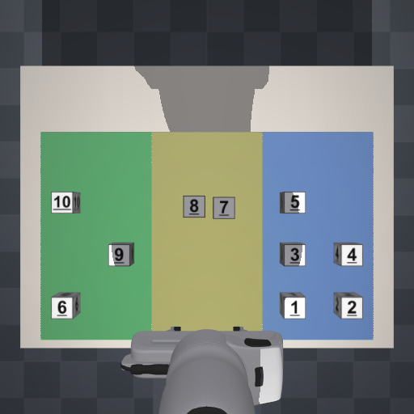
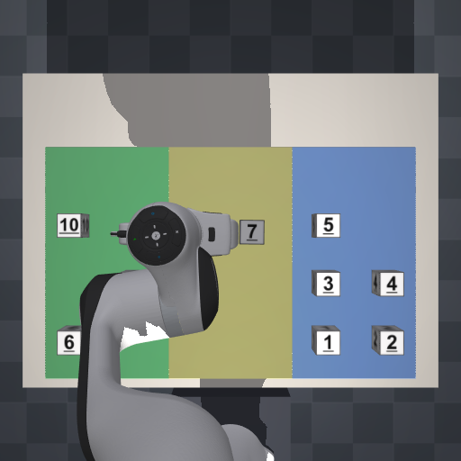
정리 대상2개 · ACC 80%→90% (+10%p) · F1 0.944
120.0초 / VLM 3회 / 696스텝 · 새로 정리: 8번
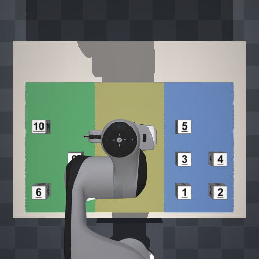
정리 대상4개 · ACC 60%→60% (+0%p) · F1 0.730
120.1초 / VLM 0회 / 1270스텝 · 새로 정리: 없음
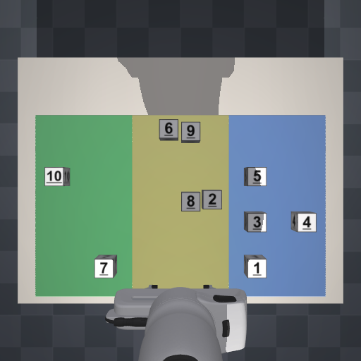
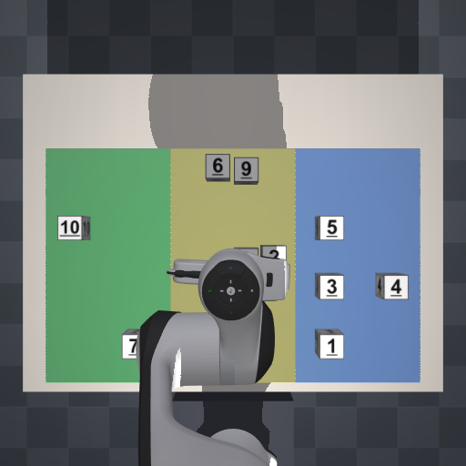
정리 대상4개 · ACC 60%→60% (+0%p) · F1 0.730
109.2초 / VLM 1회 / 960스텝 · 새로 정리: 없음

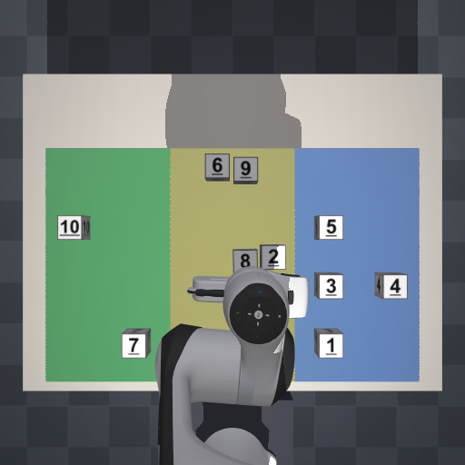
정리 대상4개 · ACC 60%→60% (+0%p) · F1 0.730
120.0초 / VLM 3회 / 712스텝 · 새로 정리: 없음

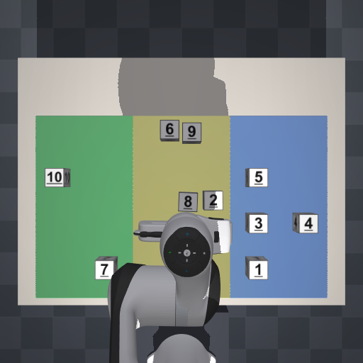
정리 대상6개 · ACC 40%→40% (+0%p) · F1 0.571
120.0초 / VLM 0회 / 1207스텝 · 새로 정리: 없음

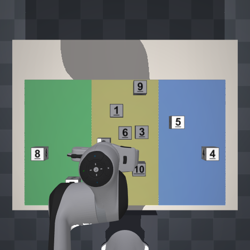
정리 대상6개 · ACC 40%→40% (+0%p) · F1 0.571
120.5초 / VLM 1회 / 930스텝 · 새로 정리: 10번
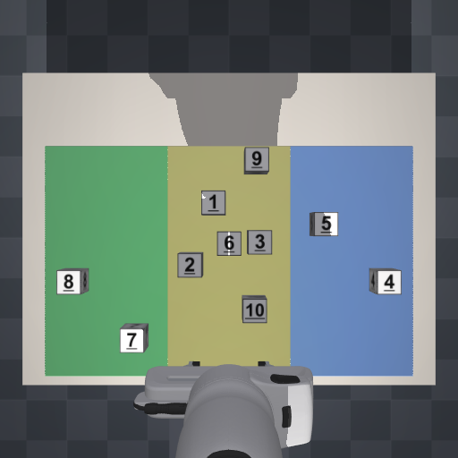
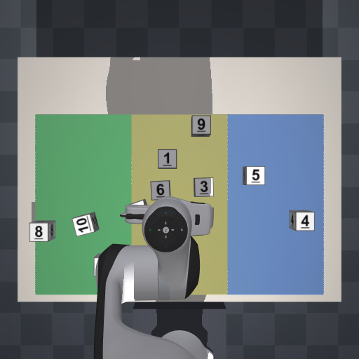
정리 대상6개 · ACC 40%→40% (+0%p) · F1 0.571
120.1초 / VLM 2회 / 680스텝 · 새로 정리: 없음

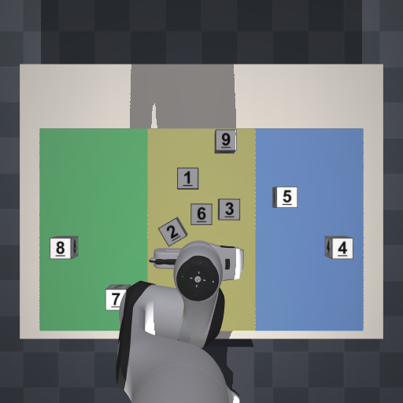
정리 대상8개 · ACC 20%→20% (+0%p) · F1 0.286
120.4초 / VLM 0회 / 1210스텝 · 새로 정리: 없음

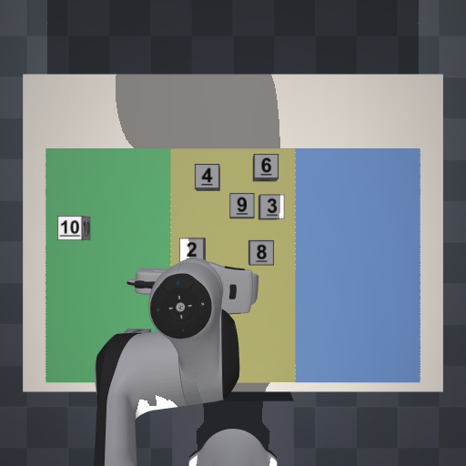
정리 대상8개 · ACC 20%→20% (+0%p) · F1 0.286
120.1초 / VLM 1회 / 930스텝 · 새로 정리: 없음
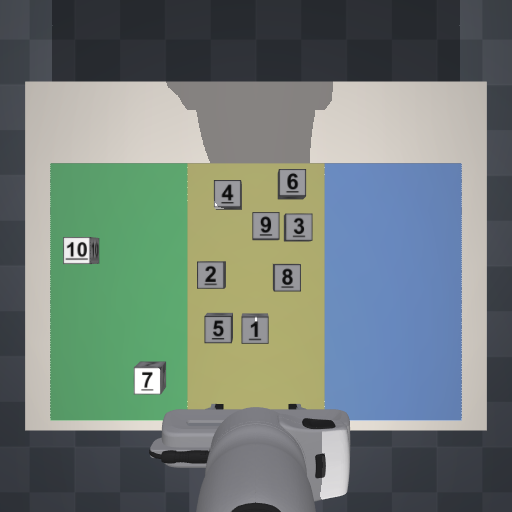
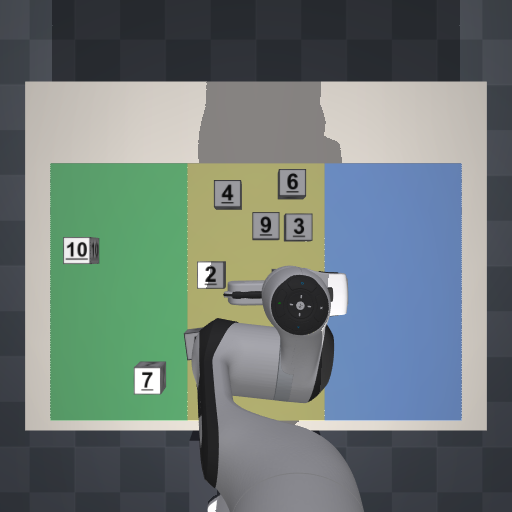
정리 대상8개 · ACC 20%→20% (+0%p) · F1 0.286
120.0초 / VLM 2회 / 666스텝 · 새로 정리: 없음

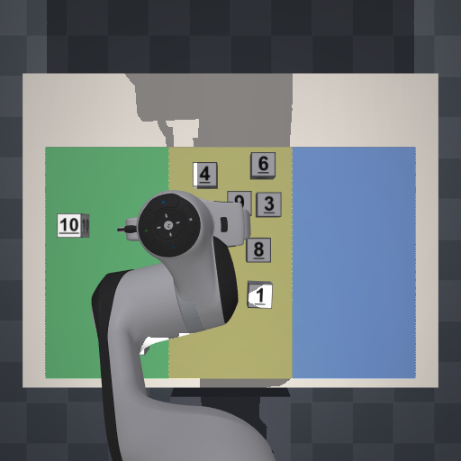
정리 대상10개 · ACC 0%→0% (+0%p) · F1 0.000
120.0초 / VLM 0회 / 1295스텝 · 새로 정리: 없음

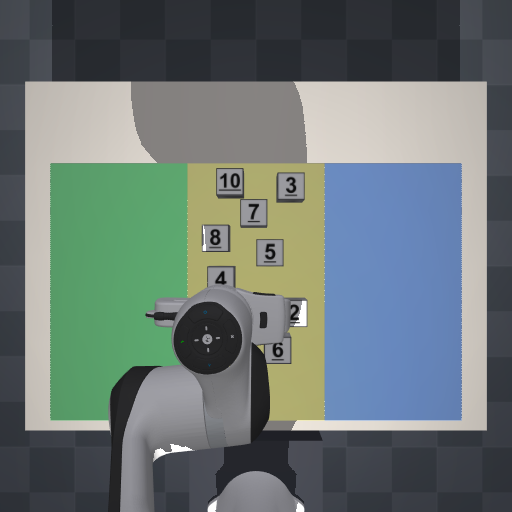
정리 대상10개 · ACC 0%→10% (+10%p) · F1 0.167
120.4초 / VLM 1회 / 980스텝 · 새로 정리: 4번

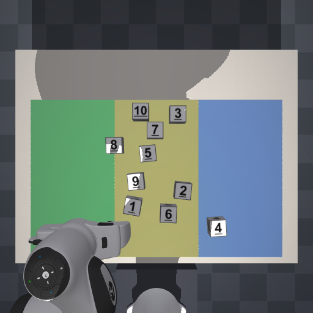
정리 대상10개 · ACC 0%→0% (+0%p) · F1 0.000
120.0초 / VLM 2회 / 739스텝 · 새로 정리: 없음
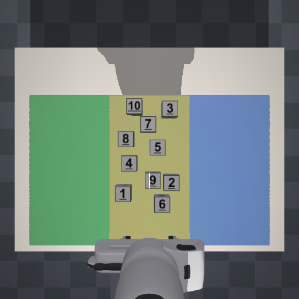
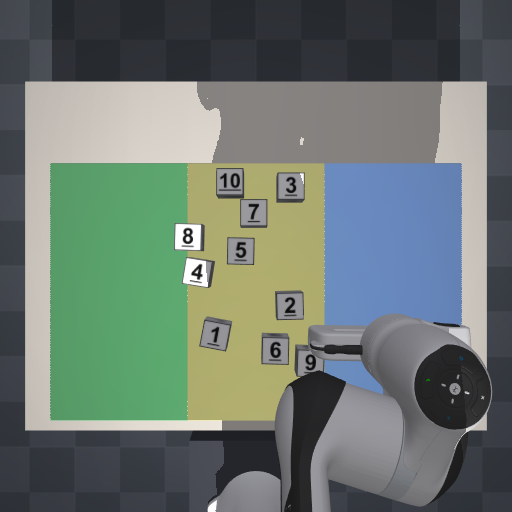
정리 대상2개 · ACC 80%→80% (+0%p) · F1 0.889
120.2초 / VLM 0회 / 1240스텝 · 새로 정리: 없음

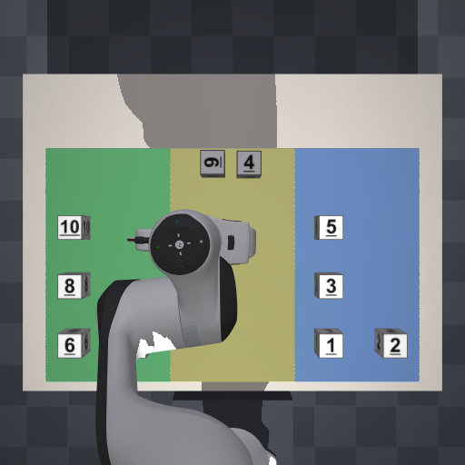
정리 대상2개 · ACC 80%→80% (+0%p) · F1 0.889
41.2초 / VLM 1회 / 240스텝 · 새로 정리: 없음
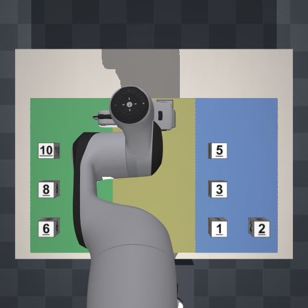
정리 대상2개 · ACC 80%→80% (+0%p) · F1 0.889
120.1초 / VLM 3회 / 680스텝 · 새로 정리: 없음
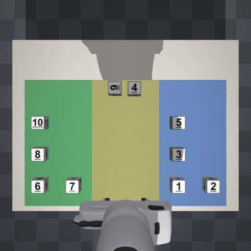
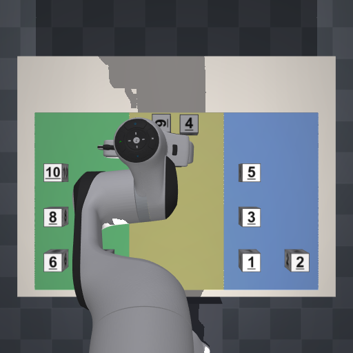
정리 대상4개 · ACC 60%→60% (+0%p) · F1 0.750
120.0초 / VLM 0회 / 1266스텝 · 새로 정리: 없음
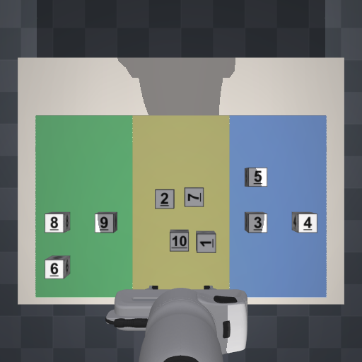
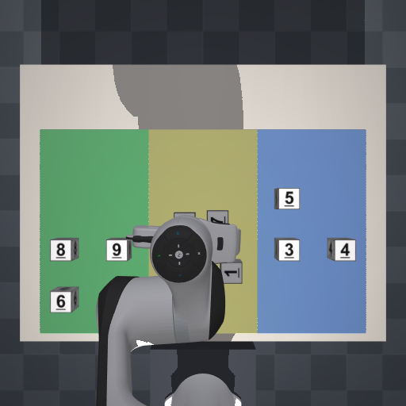
정리 대상4개 · ACC 60%→60% (+0%p) · F1 0.750
120.2초 / VLM 1회 / 1040스텝 · 새로 정리: 없음

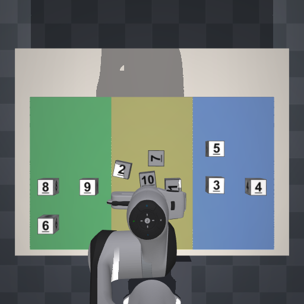
정리 대상4개 · ACC 60%→60% (+0%p) · F1 0.708
120.0초 / VLM 3회 / 678스텝 · 새로 정리: 없음

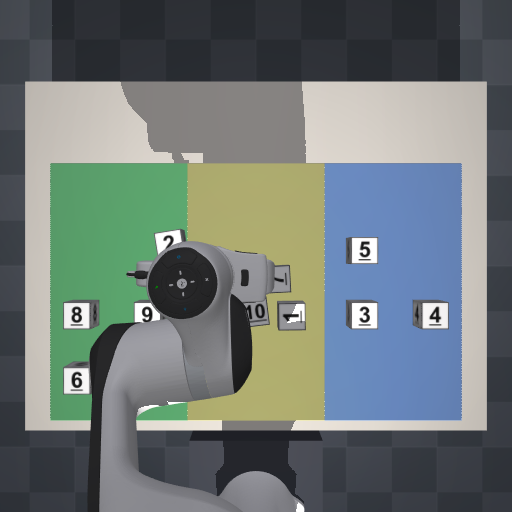
정리 대상6개 · ACC 40%→40% (+0%p) · F1 0.571
120.0초 / VLM 0회 / 1205스텝 · 새로 정리: 없음
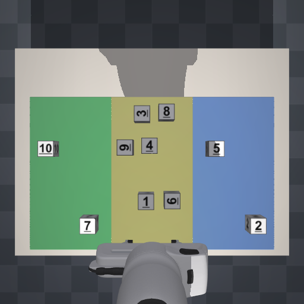
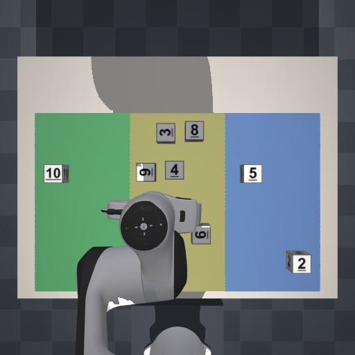
정리 대상6개 · ACC 40%→40% (+0%p) · F1 0.571
120.0초 / VLM 1회 / 933스텝 · 새로 정리: 없음

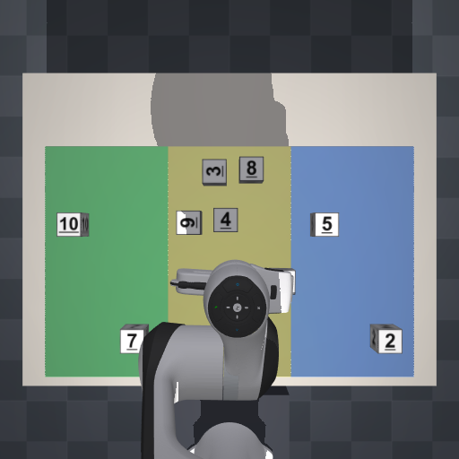
정리 대상6개 · ACC 40%→40% (+0%p) · F1 0.571
120.0초 / VLM 3회 / 537스텝 · 새로 정리: 없음

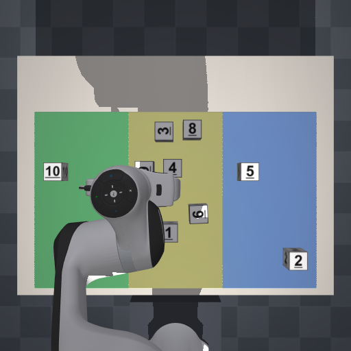
정리 대상8개 · ACC 20%→20% (+0%p) · F1 0.286
120.0초 / VLM 0회 / 1203스텝 · 새로 정리: 없음
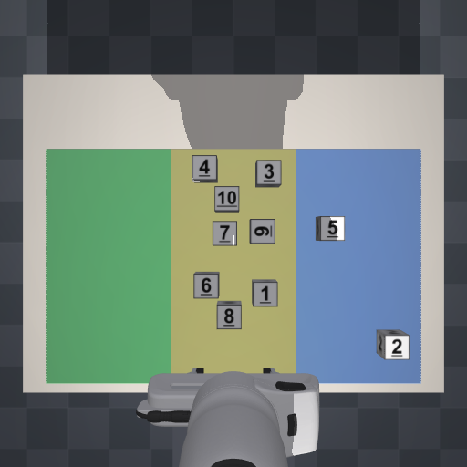
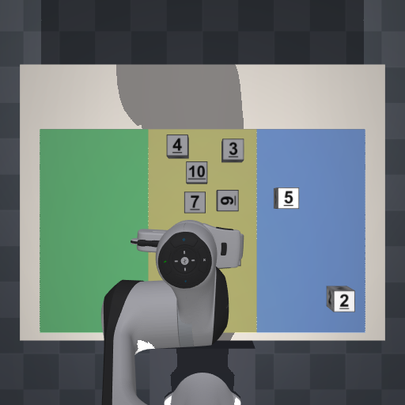
정리 대상8개 · ACC 20%→30% (+10%p) · F1 0.452
120.4초 / VLM 1회 / 930스텝 · 새로 정리: 8번

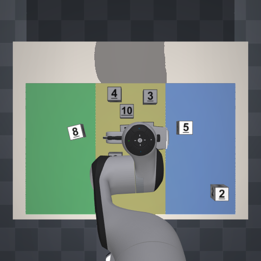
정리 대상8개 · ACC 20%→30% (+10%p) · F1 0.452
120.0초 / VLM 2회 / 672스텝 · 새로 정리: 8번

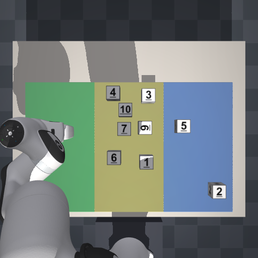
정리 대상10개 · ACC 0%→0% (+0%p) · F1 0.000
120.3초 / VLM 0회 / 1290스텝 · 새로 정리: 없음
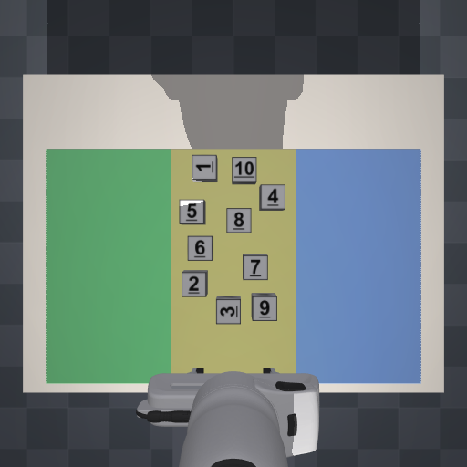
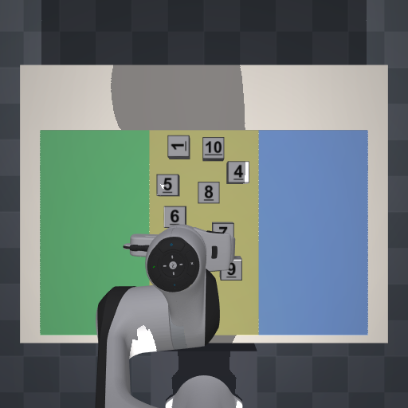
정리 대상10개 · ACC 0%→0% (+0%p) · F1 0.000
120.0초 / VLM 1회 / 990스텝 · 새로 정리: 없음

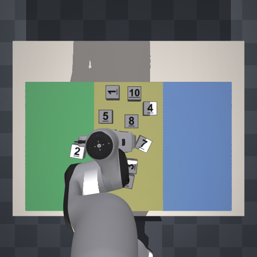
정리 대상10개 · ACC 0%→0% (+0%p) · F1 0.000
120.4초 / VLM 3회 / 580스텝 · 새로 정리: 없음